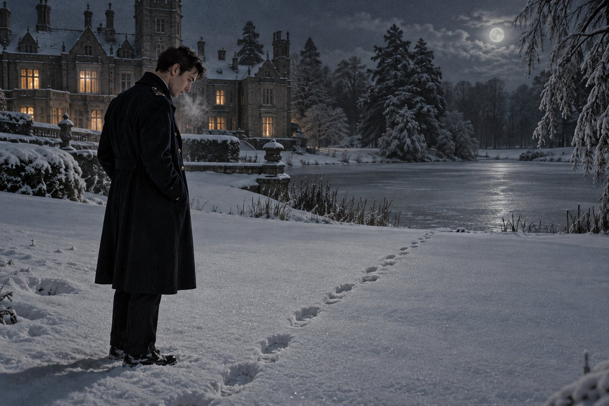

Присяга

Глава первая
Но да будет слово ваше: да, да; нет, нет; а что сверх этого, то от лукавого.
— От Матфея 5:37
Рассказчик должен представить читателю город, которого нет ни на одной карте Англии и который всё же оставил след в истории английской полиции, потому что именно там служил начинающий констебль Э. Морс. Каршолл-Ньютаун состоял, как и говорит его имя, из двух частей: из старого рыночного городка с церковью, ратушей и полудюжиной пивных, в каждой из которых ночевала когда-то королева Елизавета, и из нового города, выросшего вокруг старого за тридцать лет, с заводами, красными домами на две семьи и ни одной пивной, в которой ночевала бы королева. Старый город смотрел на новый свысока, новый на старый снизу вверх и с некоторым насмешливым состраданием, и оба состояли в одном и том же совете, что делало заседания совета зрелищем, на которое стоило брать билеты.
Была у города и своя полиция, и Рассказчик должен объяснить, почему это было не так просто, как кажется. В Англии полиция никогда не была одна на всю страну: у каждого графства была своя, а у крупных городов, которые сами себе были графством, своя отдельная, и подчинялась она не Лондону, а комитету городского совета, который по старинке назывался комитетом стражи. Полиция Каршолл-Ньютауна была одной из самых маленьких таких полиций и самым малым своим размером гордилась, как гордятся маленькие страны тем, что их бесполезно завоёвывать. В мае 1962 года королевская комиссия, три года изучавшая английскую полицию, подала свой доклад, и в докладе между строк читалось, что маленькие полиции рано или поздно сольют с большими. В Каршолл-Ньютауне доклад читали так, как читают диагноз дальнего родственника, и продолжали набирать констеблей.
Собеседование проводил сам главный констебль, и Рассказчик должен предупредить читателя, что в маленьких полициях главный констебль делал сам почти всё, включая то, чего не должен был бы делать. Это был человек лет пятидесяти, крупный, с лицом фермера и руками нотариуса, который начал службу констеблем в этом же городе до войны, и на стене его кабинета висела фотография всей полиции города в строю перед ратушей, и вся полиция города помещалась на одной фотографии. Он прочёл рекомендацию мистера Данстана из Линкольна, прочёл военный билет, где в графе «характеристика» чей-то рукой было написано «отлично», а чей-то другой поставлено в скобки, и потом долго читал ту строку, где говорилось об Оксфорде.
— Три года и без степени, — сказал он. — Почему?
Рассказчик знает честный ответ на этот вопрос, и читатель, который шёл с Морсом от начала, знает его тоже. В честном ответе были девушка из Джерико, старый дон, умерший в кресле у газового камина, и латинский дистих о счастливых дорогах. Морс не сказал ни одного из этих слов. Он сказал, что обнаружил, что его больше интересуют люди, чем тексты, и Рассказчик отмечает, что это был пересказ по всем правилам сержанта Гилкриста: смысл тот же, буквы другие, и никакого ключа противнику.
Главный констебль сказал, что люди его тоже интересуют больше текстов, именно поэтому он и спрашивает, и посмотрел на Морса так, что Морс узнал этот взгляд. Так смотрел доктор Пенхаллоу поверх очков, когда читал слишком гладкий перевод. Потом главный констебль вздохнул, как человек, которому не из кого выбирать, и сказал, что в пятницу в десять новобранец Морс примет присягу в ратуше, а в понедельник уедет в школу в Эйншем-Холл, на тринадцать недель, и что там из него или сделают констебля, или нет, и во втором случае город потеряет немного денег, а Морс немного времени.
Рассказчик пояснит, что такое присяга констебля, потому что от неё зависит название этой истории и кое-что ещё. Английский констебль не чиновник и не солдат. По старинному смыслу он гражданин, которому дана власть от имени короны, и даётся эта власть не приказом и не дипломом, а словом, произнесённым перед мировым судьёй. До этого слова новобранец может носить форму и выучить все законы королевства, но арестовать никого не вправе. После него вправе, даже если не знает ещё ни одного.
В пятницу в десять в комнате магистратов в ратуше сидел мировой судья, олдермен и торговец мануфактурой со старой Рыночной площади, седой и торжественный, и перед ним на столе лежала Библия в чёрном переплёте, затёртом до блеска руками предыдущих новобранцев. Рядом стоял главный констебль, и рядом с Морсом стоял другой новобранец, рыжий парень из местных, который присягнул первым, громко и сбиваясь, как декламируют стихи на школьном вечере, высоко подняв книгу в правой руке. Потом судья подвинул Библию Морсу.
Морс её не взял. Рассказчик уже говорил, что Морс не верил в Бога с двенадцати лет, с того года, когда умерла его мать, и при этом пел в церковных хорах везде, куда его забрасывала судьба, и читатель может спросить, почему человек, распевавший Хенделя и Баха, вдруг споткнулся о чёрный переплёт. Рассказчик ответит так: петь о Боге значит петь, а клясться Им значит клясться, и человек, который три года учился различать слова и два года служил в подвале, где за неверное слово умирали люди, не мог начать свою службу со слова, в которое не верил.
Он сказал, что хотел бы не присягать, а торжественно заявить. Рассказчик пояснит, что английский закон с конца прошлого века позволяет тому, кто не хочет клясться, дать вместо клятвы торжественное заявление, и что заявление это имеет ту же силу и те же последствия, только без Бога. Закон этот принимали не для новобранцев полиции маленьких городов, а для депутатов парламента и других людей с убеждениями, и в комнате магистратов Каршолл-Ньютауна его, по всей видимости, применяли впервые.
Судья посмотрел на главного констебля. Главный констебль посмотрел на потолок. Рыжий новобранец посмотрел на Морса с таким интересом, с каким смотрят на человека, который в церкви не встал. Потом судья вздохнул, выдвинул ящик стола, порылся в нём и нашёл там карточку с нужными словами, пожелтевшую и нетронутую, и Рассказчик думает, что из всех бумаг в той комнате эта была самой старой и самой чистой.
Морс заявил. Рассказчик не станет приводить слова, ибо слова эти принадлежат не ему, а скажет лишь, что в них были королева, мир, служба без страха и без пристрастия и не было Бога, и что Морс произнёс их ровным голосом, не сбиваясь, как читают на экзамене текст, который сам перевёл. Потом судья расписался, и главный констебль расписался, и Морс расписался, и с этой минуты, в городе, о котором он не знал ничего, кроме расстояния до Оксфорда, у него была власть от имени короны.
На ступенях ратуши рыжий новобранец догнал его и спросил, квакер ли он. Морс сказал, что нет, хотя мать его была квакершей. Рыжий подумал и сказал, что в таком случае не понимает, зачем себе усложнять жизнь, ведь никто бы не узнал. Морс сказал, что узнал бы он сам. Рассказчик не уверен, что рыжий понял этот ответ, и не уверен, что сам Морс понимал его целиком. Но он знает, что к вечеру вся полиция Каршолл-Ньютауна, которая помещалась на одной фотографии, знала, что новенький из Линкольна не берёт в руки Библию, и что такие вещи в маленьких полициях не забываются.
Глава вторая
Железо железо острит, и человек изощряет взгляд друга своего.
— Притчи 27:17
От Оксфорда до Уитни ходил автобус, от Уитни до ворот усадьбы приходилось идти пешком, и в понедельник, десятого декабря, Морс шёл эти две мили по мокрой дороге с чемоданом в одной руке и связкой пластинок в другой, и пластинки он нёс бережнее, чем чемодан. В чемодане лежали книги, бельё и таксометр отца, а пластинки могли разбиться.
Эйншем-Холл стоял в глубине парка, большой каменный дом с высокими трубами и множеством окон, построенный для людей, у которых было много гостей и ещё больше слуг. Гости и слуги давно разъехались, и с конца войны дом снимало у владельцев министерство внутренних дел, которое держало в нём окружную школу подготовки полиции. Сюда со всей округи от Уоша до Эссекса, из графств и городков, присылали новобранцев, и тринадцать недель их учили быть констеблями, а на четырнадцатой отсылали обратно уже констеблями или, реже, уже не новобранцами. Рассказчик отмечает, что в бывших бальных залах стояли парты, в бывшей курительной висела доска, а в парке, где когда-то стреляли фазанов, по утрам ходили строем, и что фазаны, по слухам, это заметили и стали смелее.
В канцелярии у входа Морсу выдали ключ, форму, одеяло и листок с распорядком дня, на котором подъём стоял так рано, что Морс сначала решил, что это опечатка. Потом ему сказали номер комнаты и объяснили, что комнаты распределяют по алфавиту, по двое, и что соседа выбирает не он, а первая буква фамилии. Морс подумал, что в армии хотя бы делали вид, что у этого есть причина.
Сосед был уже в комнате. Он стоял у окна, высокий, светловолосый, лет двадцати пяти, в рубашке с закатанными рукавами, и чистил ботинки, и при виде Морса не бросил ботинок, а сначала дочистил носок, аккуратно поставил его на газету и только потом вытер руку и протянул её.
— Морли, — сказал он. — Тед Морли. Бедфордшир. А вы, выходит, Морс. Мы с вами соседи и в списке, и по жизни.
Рассказчик должен сказать сразу, хотя Морс не знал этого ещё долго: Тед Морли был лучшим новобранцем на этом курсе, и все, кто его видел, понимали это в первый же день, и Морс тоже понял. Он был из тех людей, у которых всё лежит на месте и всё получается с первого раза, но не потому, что им везёт, а потому, что они встают раньше других. Он уже выучил наизусть первое определение, хотя выдать его должны были только вечером. Он знал, где столовая, где прачечная и какой из умывальников течёт. Он писал матери в Бедфорд каждое воскресенье, не курил, пил одну пинту и ту не допивал, и умел молчать так, что рядом с ним не было неловко, а это, по опыту Морса, умели немногие.
Он спросил, откуда Морс, и Морс сказал, что из Каршолл-Ньютауна, хотя пробыл там неделю, и что до этого был в Линкольне, а до этого в армии, а до этого в Оксфорде. Морли выслушал этот список в обратном порядке и сказал, что не каждый день видит человека, который из Оксфорда ушёл в полицию, обычно бывает наоборот. Потом спросил, правда ли, что в Каршолл-Ньютауне какой-то новенький отказался клясться на Библии, потому что слух об этом дошёл даже до Бедфордшира. Морс не стал спрашивать, как слух мог дойти до Бедфордшира за три дня, и сказал, что это был он.
Морли не удивился и не стал расспрашивать, и Морс был ему за это благодарен. Он только сказал, подумав, что сам взял бы книгу и не задумался, потому что книга есть книга, а слово есть слово, и если человек решил его держать, то удержит на книге или без книги, а если не решил, то книга ему не поможет. Рассказчик просит читателя запомнить эти слова, потому что они были сказаны вполне искренне и были, как часто бывает с искренними словами, правдой не для того, кто их говорил.
Вечером в бывшем бальном зале инспектор, ведавший учебной частью, человек сухой и вежливый, раздал им отпечатанные листы с определениями и объяснил порядок. Определения учат дословно. Каждый понедельник письменная проверка. За каждое пропущенное или переставленное слово минус балл, и никакие ссылки на то, что смысл остался тот же, не принимаются, потому что констебль, который в суде перескажет закон своими словами, проиграет дело, которое мог бы выиграть.
Первое определение было про самого констебля. Рассказчик переведёт его так близко к букве, как позволяет русский язык: констебль есть гражданин, назначенный на месте, но облечённый властью от имени короны. Дальше шло о том, что эту власть он применяет сам, по собственному разумению, и сам за неё отвечает, и никакой приказ начальства его от этой ответственности не освобождает.
Морс прочёл лист один раз и отложил. Рассказчик напоминает, что этот человек три года учил наизусть греческие хоры и два года принимал на слух чужие шифровки, и что двенадцать строк английской прозы были для него не задачей, а отдыхом. Но ночью, когда Морли уже спал, ровно дыша у окна, Морс лежал и думал не о словах, а о том, что сержант Гилкрист в подвале учил его обратному. Там слово в слово было запрещено, и за дословный повтор открытым текстом можно было подарить противнику ключ ко всему. Здесь пересказ своими словами считался провалом. Морс подумал, что, видимо, всю жизнь будет переходить из учреждения в учреждение, где в каждом правила противоположны правилам предыдущего, и в каждом он будет по-своему хорош.
В следующий понедельник оба получили за определение полный балл. Инспектор раздал листы и сказал, что за одиннадцать лет это двенадцатый случай, когда двое из одной комнаты не потеряли ни одного слова, и что он подозревает, что они списывали друг у друга. Морли засмеялся первым. Он смеялся тихо, глядя вниз, будто стеснялся, что ему смешно, и Морс заметил, что на костяшках правой руки у него старый белый шрам, неровный, как от удара о что-то острое, и что, смеясь, Морли машинально прикрыл его левой ладонью.
Рассказчик не утверждает, что Морс тогда о чём-то подумал. Он подумал только, что с соседом ему повезло, и это была правда, и правдой осталась до самого конца.
Глава третья
Испытай меня, Боже, и узнай сердце мое; испытай меня и узнай помышления мои.
— Псалом 138:23
Сержанта-инструктора по строевой звали Хокли, и Рассказчик должен сразу оговорить, что о мёртвых в этой истории будет сказано не только хорошее, потому что иначе пришлось бы молчать. Сержант Хокли служил в городской полиции Бирмингема, оттуда его прикомандировали в Эйншем на три года учить новобранцев ходить строем, и шёл уже третий из этих трёх лет. Это был человек лет под пятьдесят, квадратный, с красной шеей и голосом, который был слышен в дальнем конце парка, а в ближнем конце парка его было слышно и через закрытые окна. До полиции он служил в гвардии, и гвардия осталась в нём навсегда, как остаётся акцент.
По утрам он выстраивал курс на гравийной площадке перед домом и проходил вдоль строя, медленно, глядя на каждого так, словно каждый лично был виноват в том, что Бирмингем остался без него. Он смотрел на ботинки, на пуговицы, на бритые щёки и на что-то ещё, что не входило ни в какой устав, и Морс, который два года смотрел на армейских сержантов, понял, что Хокли ищет не грязь на ботинках, а выражение лица. Морса он в первое же утро назвал «Оксфордом», и к концу недели так его звал весь курс, и Рассказчик отмечает, что за свою жизнь Морс успел носить уже несколько прозвищ, и ни одно не выбирал сам.
Потом была строевая. Морс ходил строем хорошо, этому армия научила его основательно, но у него была привычка на счёт «раз» думать о чём-то постороннем, а на счёт «два» возвращаться, и Хокли каждый раз ловил его ровно между «раз» и «два». Потом были сигналы регулировщика: курс стоял на площадке в белых нарукавниках и разводил руками воображаемые автобусы, а Хокли изображал автобус, двигаясь на них с рёвом, и тот, кто дрогнул и опустил руку, поднимал её заново двадцать раз. Рассказчик не знает зрелища смешнее и серьёзнее одновременно, чем тридцать взрослых мужчин, которые останавливают пустоту.
Морли не дрожал. Морли вообще всё делал так, будто учился этому давно и теперь только вспоминает. Хокли проходил мимо него чаще, чем мимо других, и смотрел на него дольше, и Морс заметил это на третий день и не придал этому значения, потому что лучшего на курсе сержанты всегда разглядывают, как разглядывают на рынке слишком хорошее яблоко, отыскивая червоточину.
Вечерами у Хокли была фляжка. Это знали все, включая начальника школы, который, по слухам, знал и молчал, потому что в остальное время сержант был безупречен. Пил Хокли не много, но регулярно, у себя в комнате во флигеле у конюшен, где жил отдельно от курса, и по вечерам из флигеля иногда доносилось пение, гвардейские марши вперемешку с церковными гимнами. Морс однажды остановился послушать и поймал себя на том, что поправляет в уме фальшивую ноту в «Ведущей вперёд, о свет благой», и пошёл дальше, недовольный и собой, и Хокли.
В четверг второй недели была первая инсценировка. Рассказчик пояснит, что инструкторы Эйншема время от времени устраивали новобранцам внезапные происшествия: посреди урока в класс вбегал человек с криком, что на дороге сбили женщину, или в коридоре разыгрывалась драка, или из кабинета выносили «украденную» кассу, и курс должен был действовать, а потом записать, что видел. Записи потом сличали, и обычно оказывалось, что тридцать человек видели тридцать разных происшествий.
В тот четверг из-за поворота коридора выскочил человек в кепке и с мешком, за ним бежал инспектор с криком «держите вора», и курс, который как раз шёл из столовой, на мгновение замер всей массой, как замирает стадо. Человек в кепке был Хокли, и бежал он быстро для своих лет, и опрокинул по дороге двух новобранцев, и уже был у дверей на террасу, когда Морли, не переменившись в лице, шагнул ему наперерез, перехватил запястье, повернул, и сержант Хокли во всю свою гвардейскую величину оказался лицом в паркет, с рукой, заломленной за спину так аккуратно, что ему даже не было больно.
Стало очень тихо. Потом Хокли сказал в паркет, что всё, хватит, сынок, отпускай. Морли отпустил сразу и помог ему встать. Хокли отряхнулся, поднял кепку, посмотрел на Морли, и Морс, который стоял ближе всех, увидел, как у сержанта переменился взгляд. Так смотрит человек, который услышал в толпе голос и не может вспомнить, чей.
— Где это ты так научился, сынок?
— Регби, сержант. В школе.
— Регби, — повторил Хокли. — А я тебя нигде раньше не видел?
— Если только в Бедфорде, сержант. Я больше нигде не бывал.
Хокли сказал «ну-ну» и ушёл, и инспектор раздал бумагу, и курс сел записывать, что видел. Морс записал всё: рост, кепку, цвет мешка, время по часам на стене, и то, что человек с мешком бежал, прихрамывая на левую ногу, и это было единственное, чего не записал больше никто, и за это Морсу потом поставили высший балл. Но в записи Морса не было того, что он видел лучше всего: как Морли, отвечая про регби, держал правую руку за спиной, хотя никто его об этом не просил.
Рассказчик признаёт, что Морс этого не записал не потому, что не заметил. Он заметил. Он просто решил, что это не относится к делу, потому что в эту минуту дело было в человеке с мешком, а не в соседе по комнате. Рассказчик знает, что впоследствии Морс много раз возвращался к той записи и к тому, чего в ней не было, и знает также, что в этом не было его вины, потому что никто не обязан подозревать человека, с которым делит комнату, в том, что тот прячет руку.
Вечером Морли был весел и рассказывал, как в школе в Бедфорде их тренер по регби учил валить противника, не ломая ему костей, и Морс слушал и кивал. Ночью Морс проснулся оттого, что сосед не спал. Морли сидел на кровати у окна и смотрел в темноту парка, туда, где светилось одинокое окно флигеля у конюшен. Морс спросил, что случилось. Морли сказал, что ничего, просто не спится, и лёг, и больше в ту ночь не вставал.
В субботу вывесили списки отпусков на Рождество. Почти весь курс разъезжался по домам. Сержант Хокли оставался в школе, потому что дежурил, а по слухам, потому что в Бирмингеме его никто не ждал. Морс тоже оставался, по причинам, о которых не стал никому говорить. А в самом низу списка, тем же почерком, было приписано, что новобранец Морли тоже проведёт праздники в Эйншеме, и Морс удивился, потому что Морли собирался к матери и каждый вечер об этом говорил.
Глава четвёртая
И положила Его в ясли, потому что не было им места в гостинице.
— От Луки 2:7
Двадцать второго декабря подул восточный ветер, и курс разъезжался под ним, подняв воротники и натянув фуражки поглубже. Автобус до Уитни ушёл переполненный, с песнями, и на гравийной площадке перед домом остались трое. Морс. Морли. И маленький валлиец по фамилии Гриффитс из полиции какого-то восточного графства, чья семья жила на Англси и дорога туда и обратно стоила так, что из двух вещей, поездки домой и подарков, пришлось выбрать подарки.
Из дежурного состава остались тоже трое. Сержант Хокли старшим. Ночной сторож Пратт, старик лет под семьдесят, который служил в усадьбе ещё при прежних хозяевах, сначала мальчиком при конюшне, потом ещё кем-то, и про полицию в доме думал то же, что думали фазаны, только вслух не говорил. И повар Скиннер, бывший армейский кашевар, толстый, обидчивый и незаменимый, который с сержантом Хокли не разговаривал с октября. Причину ссоры знала вся школа, и каждый знал её по-своему: то ли Хокли сказал про стряпню Скиннера что-то при начальнике школы, то ли начальнику школы что-то сказали про исчезающий с кухни сахар, и Скиннер знал, кто.
Почему остался Морс, Рассказчик объяснит коротко. В доме его отца в Линкольне теперь жили чужие люди, и чужие люди ставили там ёлку. А провести Рождество у тех родных, какие у него остались, значило три дня отвечать на вопрос, почему он не доучился в Оксфорде, а на этот вопрос Морс уже однажды ответил в этом месяце и не хотел отвечать повторно.
А почему остался Морли, Морс спросил сам. Морли сказал, что мать написала: уезжает на праздники к сестре в Шотландию, а ехать в Шотландию на неделю ему не на что. Это было сказано спокойно и с подробностями, и тетю в Шотландии назвали по имени, и город тоже. Рассказчик не станет пока говорить, было ли письмо. Он скажет только, что Морс, который потом тридцать лет слушал чужие алиби, с годами научился не доверять именно таким подробностям, но в декабре 1962 года ещё не научился.
Дом опустел так, как пустеют только большие дома. Шаги в коридорах отдавались эхом, в классах стояли пустые парты, и на доске в бывшей курительной кто-то написал мелом определение кражи и внизу приписал: «с Рождеством, сержант». Хокли прочёл, стёр вторую строчку и оставил первую.
Рождественский обед Скиннер подал в маленькой столовой для преподавателей, на шестерых, и сел сам в конце стола, напротив Хокли, и весь обед смотрел не на него, а в тарелку. Индейка была суховата, пудинг хорош, и Хокли, к изумлению всех, сказал про пудинг вслух, а про индейку ничего не сказал, и Рассказчик считает это самым близким к перемирию, что было между этими двумя. В три часа перенесли в столовую радиолу из канцелярии и слушали королеву, и на словах гимна Хокли встал, и все встали за ним, и старик Пратт тоже, держась за спинку стула.
Вечером Хокли достал фляжку уже не прячась, и тогда Морс впервые услышал, какой у сержанта на самом деле голос, когда он не командует. Голос оказался низкий, немного усталый, с бирмингемскими гласными, которые гвардия так и не смогла вытравить. Он рассказывал про Бирмингем, про улицы, на которых стоял констеблем до войны и после, про ночные обходы, про то, что хороший констебль никогда не забывает лица, даже если лицо выросло и сменило имя.
— У нас были такие мальчишки, — сказал он, не глядя ни на кого. — Все думали, что из них ничего не выйдет. А из некоторых выходило. Из некоторых выходило такое, что и не узнаешь. Почти.
Морли встал из-за стола, сказал, что хочет подышать, и вышел. Гриффитс посмотрел ему вслед и ничего не понял. Морс посмотрел на Хокли. Хокли смотрел на дверь, и в лице его было то же выражение, что в коридоре после инсценировки, только теперь человек, который не мог вспомнить, чей это голос, кажется, вспомнил.
Двадцать шестого, в день святого Стефана, когда вся Англия доедает остатки вчерашнего и раскрывает коробки, Морс ушёл днём гулять по парку. Небо было низкое и жёлто-серое, цвета старой ревизии, и ветер с востока не унимался уже четвёртый день. За рощей в ложбине лежал пруд, узкий и длинный, с каменным мостиком и лодочным сараем, от которого остались стены и половина крыши. Пруд замёрз у берегов, а посередине ещё темнела вода, матовая и тяжёлая, как ртуть.
На мостике стоял Хокли в шинели и курил. Он услышал шаги, обернулся, и Морс увидел, что сержант ждал не его. Хокли сказал, что лёд ещё не держит и чтобы Оксфорд туда не лез, а ещё сказал, посмотрев на небо, что к ночи будет снег, он по колену чувствует. Потом помолчал и спросил, давно ли Морс знает своего соседа.
Морс сказал, что три недели. Хокли сказал «так я и думал», бросил окурок на лёд, и окурок не погас сразу, а потлел ещё некоторое время, одна оранжевая точка на сером. Он ушёл к флигелю, не прощаясь, тяжёлым строевым шагом, и Морс постоял на мостике ещё, пока не замёрз.
К вечеру пошёл снег. Сначала редкий, как будто не решившийся, потом гуще, и к ночи парк, площадка и дорога на Уитни стали одним белым местом без границ. Рассказчик напомнит, что на юге Англии снег бывает не каждую зиму и держится обычно день, и что в тот вечер вся страна ложилась спать в уверенности, что к послезавтрашнему всё растает. Вся страна ошибалась. Снег, выпавший в день святого Стефана, в тех местах так и пролежал до марта.
Ночью Морс слышал, как Морли долго стоял у окна, и как снег шуршал по стеклу, и как где-то далеко, во флигеле у конюшен, сержант Хокли пел сам себе рождественский гимн, фальшиво и очень серьёзно, и никак не мог добраться до последнего куплета.
Глава пятая
Если упадет один, то другой поднимет товарища своего. Но горе одному, когда упадет, а другого нет, который поднял бы его.
— Екклесиаст 4:10
Три дня после Рождества снег лежал смирно, а на четвёртый, двадцать девятого, пришёл ветер. Рассказчик видел немало метелей, но эта была из тех, которые потом меряют другими метелями. Ветер шёл с востока, ровный и бесконечный, и нёс снег не сверху вниз, а вдоль земли, и к вечеру тридцатого аллея к воротам исчезла, а на её месте лежала гладкая белая насыпь в человеческий рост, и ворота торчали из неё одними верхушками столбов. Утром тридцатого замолчал телефон в канцелярии. Сержант Хокли покрутил ручку, послушал, положил трубку и сказал, что где-то между Эйншемом и Уитни под снегом лежит столб, а вместе с ним и вся связь школы с миром.
Старик Пратт отнёсся к этому спокойнее всех. Он видел в этом доме зимы и похуже, хотя на вопрос, какие именно, отвечал, что не помнит. У Пратта была толстая конторская книга, в которую он сорок лет записывал погоду: сперва для прежнего хозяина, который любил знать, какой будет охота, потом по привычке, а потом потому, что никто ему не запрещал. Каждый час ночного обхода Пратт отмечал в книге время, ветер, снег и всё, что видел, мелким круглым почерком, каким пишут люди, учившиеся письму поздно и всерьёз. Рассказчик просит читателя запомнить эту книгу. Морс её запомнил не сразу.
Начальник школы уехал на праздники к родным, и в канун Нового года Хокли сам взялся за праздник, как брался за строевую: с расписанием. В десять вечера всем собраться в малой столовой. Скиннер подаёт что найдётся. Радиола из канцелярии. В полночь Биг-Бен по радио, гимн, тост за королеву, и спать. Скиннер нашёл ветчину, пирог со свининой и две бутылки портвейна, которые, по его словам, были последними, а по словам Хокли, были последними из тех, о которых Скиннер готов был сообщить.
Сидели вшестером. Гриффитс рассказывал про Англси так, будто Англси был по меньшей мере Римом. Пратт молчал и ел. Скиннер с Хокли не разговаривали, но оба смеялись над Гриффитсом, и это было почти то же самое. Морли был весел ровно и аккуратно, как делал всё, и Морс, который сидел рядом, замечал, что сосед почти не пьёт и всё время поворачивается так, чтобы не встретиться с Хокли глазами. Хокли пил больше обычного. Фляжка его к полуночи появлялась на столе открыто, и никто не делал вид, что её не видит.
В полночь Биг-Бена не было. Радио гудело, диктор что-то говорил, а курантов всё не было, и Гриффитс сказал, что, может быть, Новый год в этом году отменили из-за погоды, как отменяют футбол. Потом куранты всё-таки ударили, и потом, когда до Эйншема снова стали доходить газеты, выяснилось, что на стрелки знаменитых часов налип снег и они опоздали. Но в малой столовой Эйншем-Холла об этом не знали, и Морс, глядя на свои часы, которые показывали уже пять минут первого, подумал, что тысяча девятьсот шестьдесят третий год начинается с опозданием и в этом есть что-то правильное.
Спели гимн. Выпили за королеву. Хокли стоял очень прямо и пел очень громко, и Рассказчик не стал бы над ним смеяться, потому что пел он всерьёз. Потом сел, и вдруг сказал, что новобранец Морли пусть зайдёт к нему на минуту в сапожную, есть разговор. Морли встал без вопросов. Они вышли. Сапожной в Эйншеме называли маленькую комнату у бокового выхода в парк, где на полках стояли сапоги и гуталин, а на крюках висели шинели. Дверь за ними закрылась.
Морс не слышал, о чём они говорили, и Рассказчик тоже не станет пока этого пересказывать. Скажет только, что разговор длился недолго, что Гриффитс в это время выходил за водой на кухню, а кухня была через коридор от сапожной, и что вернулся Гриффитс с кувшином и с лицом человека, который случайно услышал чужое и решил, что это его не касается. Валлийцы, как известно Рассказчику, умеют решать такие вещи быстро и окончательно, хотя и не навсегда.
Морли вернулся первым, сел, налил себе портвейна, выпил залпом, и это был единственный раз за весь вечер, когда он выпил. Хокли вернулся следом, буднично, и сказал, что праздник окончен, а завтра подъём, как обычно, Новый год не Новый год. Было без четверти час.
В четверть второго Пратт, обходя дом, записал в свою книгу, что видел, как свет в окне флигеля погас и сержант Хокли вышел из флигеля в парк в шинели, по направлению к пруду. Рядом Пратт отметил, что снег всё идёт, ветер восточный, сильный. Рассказчик приводит эти записи не случайно, но и не ради того, чтобы читатель ими сейчас занимался. Пусть пока полежат, как полежали тогда в книге старика.
Морсу не спалось. Он полежал в темноте, слушая, как ветер шарит по стене дома, и как дышит у окна Морли, ровно, слишком ровно, как дышат люди, которые не спят и хотят, чтобы этого никто не заметил. Морс не стал ничего спрашивать. Около часа он встал, надел шинель и вышел через главный вход на террасу, а оттуда спустился в парк, в сторону аллеи, и прошёл по ней шагов двести, проваливаясь по колено. Он сам не мог бы объяснить зачем. Может быть, затем, что Новый год, который пришёл с опозданием, хотелось встретить хотя бы раз одному.
В парке было почти светло от снега. Снег летел в лицо, и Морс шёл, нагнув голову, а потом повернул назад, потому что дальше аллеи идти было некуда, и следы его, ещё не успев остыть, уже затягивало белым. Когда он поднимался на террасу, ему показалось, что вдалеке, за рощей, у пруда, мигнула оранжевая точка, как огонёк сигареты. Потом снег закрыл её. Морс вошёл в дом, поднялся к себе, разделся, лёг. Морли лежал лицом к стене. Было двадцать минут второго.
Около половины второго снег перестал. Морс это видел, потому что лежал лицом к окну. Сначала стало тише, потом стало светлее, а потом в разрыве облаков вышла луна, почти полная, и парк под ней сделался таким, каким его рисуют на рождественских открытках, которые не дарят взрослым: синие тени, белые деревья и ни одного человека. Пратт в своей книге записал то же самое, только короче: «1.30, снег прекратился, ясно, луна, мороз крепчает, метёт».
Морс заснул почти сразу. Рассказчик отмечает это без упрёка: человек, проснувшийся в пять утра и прошедший по снегу двести шагов в одну сторону и двести в другую, имеет право заснуть. Но Рассказчик отмечает и другое: это была последняя ночь, когда Эндевор Морс засыпал, не зная, что такое ложное слово, сказанное другом. Больше таких ночей у него не было.
Глава шестая
Что ты сделал? голос крови брата твоего вопиет ко Мне от земли.
— Бытие 4:10
В шестом часу Морс наполовину проснулся. В комнате было ещё темно, только снег за окном светился сам по себе, и на фоне окна Морли, уже одетый, снимал с крюка шинель. Он вставал первым каждое утро и каждое утро, до подъёма, делал круг по парку, и метель не была для него причиной изменять привычкам. Шинель в его руках не обвисала, а держала форму внизу, у подола, как картон, и Морс подумал сквозь сон что-то про крахмал и свою ротную прачечную в Германии и снова уснул. Рассказчик не станет судить его за это строже, чем судил себя сам Морс в следующие недели.
В четверть восьмого дверь распахнулась, и Морли с порога, не заходя, сказал, что у пруда лежит сержант Хокли и, кажется, не дышит. Сказал так, как сказал бы на инсценировке: чётко, по порядку, кто, где, в каком состоянии. И только лицо у него было не как на инсценировке, а серое, с белыми губами, и Морс решил, что это от мороза.
Они вышли через сапожную, вчетвером: Морли, Морс, Гриффитс и старик Пратт, который как раз сдавал ночное дежурство самому себе, потому что смены ему не было. Скиннер спал. У двери Морли остановился и сказал, что идти надо след в след за ним, по его тропе, чтобы не затоптать ничего вокруг. Именно так их учили на третьей неделе: к месту происшествия одной дорогой, и той, которая уже есть. Рассказчик думает, что инструктор со своими правилами мог бы гордиться новобранцем Морли в то утро, и что страннее этой гордости ничего нельзя вообразить.
Тропа шла от двери сапожной наискосок через лужайку, мимо рощи, к каменному мостику: одна цепочка глубоких, чётких следов, с острыми краями, какие бывают только в сухом морозном снегу. Морс шёл вторым и ставил ноги в чужие следы, а раз ставил ноги, то и смотрел в них, и смотрел с тем тупым постоянством, с каким смотрит на дорогу человек, который боится смотреть вперёд. И видел он вот что. В некоторых следах, на дне, у пятки, лежала тонкая седая пыль снега, нанесённая ветром, а некоторые следы были с двойным краем, как буква, напечатанная дважды со сдвигом. Морс отметил это так, как отмечал опечатки в чужом тексте в подвале в Германии, не думая, и пошёл дальше.
Слева, от флигеля у конюшен, шла к пруду другая цепочка, и на неё Рассказчику тоже придётся попросить читателя взглянуть. Это были не следы, а скорее воспоминание о следах: ряд мягких округлых ямок, почти до краёв заполненных свежим снегом, неровный, с завитком у рощи, где идущий, видимо, останавливался. А ещё дальше, у аллеи, Морс узнал такие же округлые ямки своих собственных ночных следов и почему-то почувствовал стыд, словно его застали за чем-то неприличным.
Сержант Хокли лежал на льду под мостиком, у самой каменной опоры, на боку, подогнув колени, как ложатся спать на странной кровати. Шинель его побелела с наветренной стороны, снег набился в складки, а на спине его не было почти совсем. Фуражка валялась в ярде от него. Фляжка, открытая, вмёрзла в лёд у его руки, и то, что из неё вытекло, замёрзло рыжеватым пятном. На мостике, у перил, были топтаные следы и два окурка в снегу. Лицо сержанта Морс увидел только сбоку и не стал смотреть лучше. Рассказчик уже говорил, и не в одной истории, что Морс плохо переносил вид мёртвых, и что никакая служба этого так и не исправила.
Морли спустился на лёд у берега, где лёд держал, сел на корточки, приложил пальцы к шее сержанта, долго держал. Потом сказал, что сержант мёртв и мёртв давно, он уже окоченел. И дальше всё по учебнику: Гриффитс бегом к телефону, вдруг ожил. Пратт за одеялом, чтобы накрыть. Тело не трогать. Морс остаётся с ним и никого не подпускает. Морс слушал и кивал и подумал, что у него самого сейчас не хватило бы на это ни голоса, ни памяти, и что из Морли выйдет констебль лучше, чем из него. Рассказчик не станет спорить с этим выводом. Он заметит лишь, что хороший констебль и честный констебль совпадают чаще, чем думают циники, но реже, чем хотелось бы начальникам школ.
Сам Морли побежал к дому вслед за Гриффитсом, напрямик, по целине, и Морс долго видел его тёмную фигуру на белом и новую цепочку следов за ней, свежую, чистую, без всякой пыли. Ветер к утру улёгся совсем, и тишина стояла такая, что было слышно, как в доме хлопнула дверь.
Морс остался один на мостике. Он стоял там, где шесть дней назад стоял Хокли и говорил, что лёд ещё не держит, и смотрел вниз, на серую шинель на белом. Он думал о том, что сержант был пьян, что на мостике скользко, что перила по пояс, а сержант был высок. Он думал обо всём, о чём положено думать над пьяным покойником. А потом достал из кармана шинели карандаш и блокнот, который им велели всегда носить с собой, и записал всё по порядку, как на инсценировке: время, позу, фуражку, фляжку, два окурка, две цепочки следов к пруду, мягкую и чёткую, и седую пыль в некоторых следах чёткой, и двойной край.
Пальцы у него мёрзли, и почерк получился чужой. Но запись была полной, и Рассказчик считает её первым настоящим документом в долгой полицейской карьере Эндевора Морса. В ней не было ни одного вывода. И не было одной строчки, которую Морс не записал, потому что она не пришла ему в голову: про шинель, которая в шестом часу утра держала форму, как картон.
Из дома вернулся Гриффитс и крикнул издалека, что телефон молчит. За ним, в фартуке поверх пальто, шёл Скиннер, и сказал, ещё не дойдя, на весь парк, что он всегда знал, что этим кончится. Потом дошёл, посмотрел вниз и ничего больше не сказал. А старик Пратт принёс одеяло, коричневое, с вышитым вензелем прежних хозяев, и аккуратно, как стелят постель гостю, накрыл им сержанта Хокли с головой.
Глава седьмая
Не скоро совершается суд над худыми делами; от этого и не страшится сердце сынов человеческих делать зло.
— Екклесиаст 8:11
Телефон молчал весь день. В десять утра Морли сказал, что пойдёт пешком до ближайшей деревни, где есть почта и констебль, и никто не стал с ним спорить, потому что из всех он был самым сильным и самым спокойным. С ним пошёл Гриффитс. Две мили они шли четыре часа, проваливаясь в сугробы по пояс и обходя те, что были выше головы, и Гриффитс потом рассказывал, что без Морли он бы не дошёл, а Морли говорил, что без Гриффитса не дошёл бы он, и Рассказчик думает, что прав был Гриффитс.
Деревенский констебль, человек пожилой и неторопливый, дозвонился до графства с третьей попытки и к вечеру пришёл в усадьбу сам, по следам новобранцев, с фонарём и в гетрах. Он посмотрел на тело под одеялом, посмотрел на фляжку во льду, посмотрел на перила мостика, сказал «ну-ну» с той же интонацией, с какой говорил сам Хокли, и сел в канцелярии ждать. Ночью у тела дежурили по очереди Морс и Пратт, по два часа. Рассказчик не станет описывать эти часы. Скажет только, что луна была полная и что за ночь Морс дважды спускался посмотреть, на месте ли одеяло, хотя ветра не было.
Второго января по аллее прошёл трактор с отвалом, нанятый у фермера, за ним, по пробитой колее, приползли две машины полиции графства, а из первой вышел детектив-инспектор Уэйкли. Рассказчик знал немало инспекторов и кое-кого из них уже представлял читателю. Уэйкли был из тех, кого начальство ценит за то, что дела у него заканчиваются быстро, а подчинённые за то, что он не выдумывает им лишней работы. Ему было лет под пятьдесят, он был сед, вежлив и простужен, и всё, что случилось в Эйншеме, было для него прежде всего третьим происшествием за сутки, а не первым.
С ним приехал полицейский врач, который спустился на лёд, приподнял одеяло, потрогал голову сержанта пальцами в перчатке, понюхал фляжку и сказал, не оборачиваясь, что на затылке рана, на каменной опоре мостика кровь и волосы, а всё остальное сделал мороз. Уэйкли постоял на мостике, положил руку на перила, прикинул их высоту к своему поясу и покивал, как кивает человек, у которого сошлась сумма. Пьяный человек. Ночь. Скользкий мостик, низкие перила. Перевалился, ударился головой о камень, потерял сознание, а дальше мороз делает своё дело за час. Всего лишь несчастный случай. И притом, сказал Уэйкли, такой, каких в эту зиму по графству будет ещё десяток.
Потом он расспрашивал всех по очереди, в канцелярии, и расспрашивал недолго. Когда кончился праздник. Когда легли. Сколько выпил сержант. Кто нашёл. Морли рассказал, что вышел в седьмом часу через сапожную, как каждое утро, с крыльца увидел под мостиком что-то тёмное, пошёл прямо туда, а когда понял, что это, той же дорогой вернулся в дом, чтобы не наследить. Он рассказал это так же, как рассказывал всё: точно, спокойно и со временем по часам, и Уэйкли сказал, что из него выйдет толк. Морс слышал это из коридора, ожидая своей очереди, и почувствовал что-то вроде зуда в затылке, как от строчки, которую забыл и не можешь вспомнить. Рассказчик мог бы подсказать ему эту строчку, но Рассказчики так не поступают.
Когда пришла его очередь, Морс ответил на все вопросы, а потом достал блокнот и предложил инспектору свою запись. Уэйкли взял, пробежал глазами страницу, вторую. Дошёл до следов, до пыли и двойного края, и тут поднял глаза на Морса с тем выражением, с каким взрослый смотрит на ребёнка, который принёс ему дохлую птицу и ждёт, что её сейчас оживят.
— Хорошо пишете, сынок, — сказал он. — Коронеры любят такие записи. А про следы я вам так скажу. Следы в снегу читают детективы в журналах с цветными обложками. А в жизни по этим следам вы вчетвером прошли туда, потом вчетвером обратно, потом по ним ходили дежурить всю ночь, потом прошёл наш констебль в гетрах. И что теперь там осталось?
Морс сказал, что осталась его запись. Уэйкли сказал, что именно так, что осталась запись новобранца на третьей неделе курса, сделанная замёрзшими пальцами над покойником, и что он приложит её к делу, раз уж она есть. И вернул блокнот, а страницу вырвал и сложил вчетверо. Рассказчик должен сказать в защиту инспектора Уэйкли, что он был прав во всём, кроме одного, и что на его месте всякий разумный человек ошибся бы именно в этом одном.
Вечером тело увезли. Перед тем его долго отдирали ото льда, и Морс старался не слушать. Вместе с машиной полиции приехал начальник школы, суперинтендент, серый от дороги и от того, что уже думал о том, что напишет в министерство. Он пожал руку Уэйкли, пожал руку Морли, о котором ему уже рассказали, и сказал, что не сомневался в нём. Уэйкли сообщил, что вскрытие сделают завтра, дознание коронер откроет в пятницу и, как всегда, сразу отложит, а в остальном дело ясное. Начальник школы с облегчением сказал, что именно так и думал.
Рассказчик не станет делать вид, что на этом история кончилась: читатель видит, сколько ещё ей осталось страниц. Но он хочет, чтобы читатель запомнил этот вечер второго января, когда всё было ясно и все были довольны. Такие вечера бывают в каждом деле, и Морс, став старше, научился их не любить больше всего. В тот вечер он ещё не умел их не любить. Он просто лёг спать и долго слушал, как ровно дышит у окна Морли.
Глава восьмая
Лучше блюдо зелени, и при нем любовь, нежели откормленный бык, и при нем ненависть.
— Притчи 15:17
Инспектор Уэйкли вернулся в субботу, пятого, назавтра после того, как коронер в Уитни открыл дознание, выслушал опознание тела и отложил всё остальное до лучших времён. Инспектор был в дурном настроении. Рассказчик знает причину: вскрытие показало, что на левой стороне челюсти сержанта Хокли синяк, свежий, от сильного удара, и что получил его сержант не о камень и не о лёд, а из тех же двух часов, что и рану на затылке. Патологам дела нет до того, сколько у инспектора в графстве занесённых снегом дорог и замёрзших старух, и этим они невыносимы.
Уэйкли сел в канцелярии, там же, где сидел в прошлый раз, и начал сначала. Теперь он спрашивал другое: не когда легли, а кто сержанта не любил. И первое имя, которое он услышал, и второе, и третье, было имя повара Скиннера.
История с сахаром, которую в школе каждый рассказывал по-своему, на бумаге оказалась проще и хуже всех версий. В октябре сержант Хокли подал начальнику школы рапорт о том, что с кухни регулярно уходят сахар, чай и масло, и что уходят они в сумке повара по субботам. Начальник школы отложил рапорт до конца курса, потому что хорошего повара найти труднее, чем хорошего сержанта, но не выбросил. А Скиннер в тот же день, при трёх новобранцах прошлого набора и одной судомойке, сказал, что утопит сержанта в пруду, как котёнка, и что его за это всего лишь поблагодарят.
Рассказчик давно заметил, что люди, которые говорят при свидетелях, что утопят кого-нибудь, как котёнка, редко кого-нибудь топят. Но он также знает, что инспекторам платят не за наблюдения о человеческой природе. Скиннера расспрашивали час. Вышел он из канцелярии красный, с мокрым лбом и с видом человека, которому наконец воздали по заслугам, только не за то. Про новогоднюю ночь он сказал, что после гимна убрал со стола, сел на кухне допивать то, что осталось в одной из двух последних бутылок, и дальше ничего не помнит, а проснулся от крика новобранца Гриффитса про телефон. И что он, Скиннер, если инспектору интересно, сержанта не трогал и трогать бы не стал, потому что на войне насмотрелся, как на кашеваров нападают всякие сержанты, и ни один ещё от кашевара не умер.
У Скиннера нашёлся свидетель, и свидетель этот сидел в коридоре рядом с Морсом. Гриффитс в ту ночь проснулся от жажды, как просыпаются после портвейна все, кто не привык его пить, и спустился на кухню за водой. Скиннер спал там за столом, уткнувшись в руки, и храпел так, что дрожали крышки на кастрюлях. Часы над плитой показывали сорок минут третьего, и Гриффитс это запомнил, потому что на занятиях им вбили в голову запоминать время, и вот пригодилось. Он даже накрыл Скиннера его же фартуком, в чём теперь, кажется, раскаивался.
На главный вопрос, мог ли Скиннер сходить к пруду до сорока минут третьего, ответили сапоги Скиннера. Они стояли в сапожной сухие, с нетронутой ваксой, а других у него не было. К тому же Скиннер был на голову ниже сержанта и вдвое толще, и никто из тех, кто знал обоих, не мог представить себе, чтобы повар решился один на один подойти к Хокли на расстояние удара. Уэйкли неохотно вычеркнул Скиннера из своего списка, и Рассказчик подозревает, что сахар он вычеркнул не сразу.
Вторым был старик Пратт. У Пратта с сержантом тоже были счёты, тихие, как всё у Пратта. Хокли дважды заставал его спящим на посту и дважды при всех объявлял, что в гвардии за такое отдают под суд, а в школах министерства внутренних дел, к сожалению, нет. Пратт боялся, что его уволят, а идти ему было некуда, и вся школа это знала. Но у Пратта была книга.
Он принёс её сам, не дожидаясь вопросов, и положил на стол перед инспектором, открытой на нужной странице, как кладут паспорт. Уэйкли читал долго, потому что почерк был мелкий, а Морс стоял у двери, потому что инспектор велел ему позвать следующего и забыл отпустить. Рассказчик приведёт те записи, какие они были, со всеми сокращениями Пратта, ибо читатель имеет на них такое же право, как и инспектор:
«31.XII. 11 веч. Снег, ветер вост., сильн. Все в мал. столовой. 1.I. 1.05 ночи. Новобр. (высок., тёмн.) вышел на террасу, в парк. 1.15. Серж. Х. вышел из флигеля к пруду. Снег идёт. 1.20. Новобр. вернулся. 1.30. Снег прекратился, ясно, луна, мороз крепчает, метёт. 2.00. Обход. Всё тихо. Метёт. 3.00. Обход. Всё тихо. Метёт. 4.00. Обход. Метёт меньше. 5.00. Обход. Ветер стих. Тихо. 6.00. Обход. Тихо. Мороз».
Уэйкли спросил, видел ли Пратт, как сержант вернулся. Пратт сказал, что не видел, иначе записал бы. Уэйкли спросил, откуда он смотрит на парк. Пратт сказал, что из окна своей комнаты над главным входом, откуда видны терраса, флигель и весь парк до рощи, а пруда не видать, и двери сапожной тоже, она за углом. А обходы он делает по дому, внутри, потому что в семьдесят лет не ходят по сугробам из уважения к министерству. Уэйкли попросил показать руки. Пратт показал. Руки были старые, с распухшими суставами, и сжаться в кулак до конца они уже не могли. Инспектор сказал «спасибо, мистер Пратт» с такой вежливостью, что старик покраснел.
Потом Уэйкли посидел над книгой ещё, один, водя пальцем по строчкам, и медленно, как делают арифметику в уме уставшие люди, сложил то, что у него было. Снег перестал в половине второго. Следы сержанта занесены, значит, сделаны раньше, что сходится с книгой. После половины второго к пруду никто не ходил, кроме новобранца Морли утром, и это тоже сходится. А значит, если сержанта кто-то ударил, то ударил он его между четвертью и половиной второго, пока снег ещё шёл и заметал все следы. И в эти пятнадцать минут, согласно книге мистера Пратта, в парке был ровно один человек, кроме сержанта.
Инспектор поднял глаза на новобранца у двери, высокого и тёмноволосого, и сказал, что теперь, пожалуй, последующего звать не надо, и предложил Морсу сесть.
Глава девятая
Ибо восстали на меня свидетели лживые и дышат злобою.
— Псалом 26:12
Рассказчик не будет притворяться, что всё, что происходило дальше в канцелярии Эйншем-Холла, было для Морса неожиданностью. У человека, который два года сидел в наушниках и слушал чужие разговоры, вырабатывается привычка слышать и свой собственный разговор так, как его слышит кто-то третий. Морс слышал теперь, как звучит его история для инспектора Уэйкли, и звучала она плохо.
Да, он выходил в парк. В начале второго. Прошёл по аллее шагов двести и вернулся. Зачем? Он не мог сказать. Хотелось побыть одному. Уэйкли записал это медленно, слово в слово, и Рассказчик замечает, что нет на свете фразы, которая выглядела бы на бумаге хуже, чем «хотелось побыть одному», сказанная новобранцем про ночь, в которую убили его инструктора. Видел ли он сержанта? Нет. Видел, кажется, огонёк сигареты у пруда, с террасы, когда возвращался. Кажется? Снег шёл, было далеко. Морс сказал, что уверен настолько, насколько может быть уверен человек, который смотрел сквозь метель с четверти мили, и Уэйкли записал и это.
Потом инспектор попросил рассказать про сержанта Хокли и про «Оксфорд». Оказалось, что за сутки своего пребывания в школе Уэйкли успел узнать о Морсе больше, чем Морс думал, что о нём вообще можно узнать за сутки. Что сержант его изводил на строевой. Что однажды, на сигналах регулировщика, заставил его поднимать руку сорок раз вместо двадцати. Что у себя в городе Морс отказался клясться на Библии. Инспектор спросил об этом последним, отложив карандаш, и в вопросе слышно было не любопытство, а то самое чувство, с каким рыжий новобранец в Каршолл-Ньютауне смотрел на человека, который в церкви не встал.
— Я не отказался, — сказал Морс. — Я заявил. Это то же самое, сэр. По закону.
— По закону, — согласился Уэйкли.
Рассказчик слышал много способов согласиться с человеком так, чтобы он понял, что с ним не согласны. Этот был одним из самых удачных.
Потом инспектор попросил показать руки, как просил у Пратта. Руки у Морса были целые, белые, с длинными пальцами, какие бывают у людей, играющих на фортепьяно или не делающих ничего. Уэйкли посмотрел и сказал, что в такую ночь все ходят в перчатках, а удар в перчатке руки не портит. И попросил их убрать.
Затем позвали Морли. Морс сидел в коридоре и слышал каждое слово, потому что дверь канцелярии разбухла от сырости ещё при прежних хозяевах и закрывалась не до конца. Нет, сэр, Морли не спал, когда Морс выходил, слышал, как тот одевается и уходит. Вернулся минут через пятнадцать, может через двадцать, точнее сказать не может, потому что на часы не смотрел. Нет, Морс ничего не говорил, когда вернулся. Да, после этого сам Морли заснул и спал до половины седьмого. Нет, не просыпался. Сказал он всё это неохотно, с паузами, как говорят про друга то, что говорить не хочется, и в конце добавил сам, без вопроса, что не верит, чтобы Морс мог кого-то ударить.
Рассказчик просит читателя обратить внимание: в показаниях новобранца Морли не было ни слова неправды про Морса. Морс в самом деле выходил и в самом деле ничего не сказал, вернувшись. Рассказчик давно заметил, что самая убедительная ложь состоит из правды про других и одной-единственной фразы про себя.
Потом Морса позвали обратно и задали тот же вопрос с другой стороны. Выходил ли ночью Морли? И тут Морс понял, что честно ответить на этот вопрос не может, а нечестно не станет. Что-то он слышал позже, сквозь сон. Дверь, холод от чужой одежды, дыхание, слишком частое для спящего. Во сколько, не знает. Наяву ли или во сне, не знает. Готов ли он повторить это под присягой? Морс помолчал и сказал, что под присягой он может сказать только то, что сейчас сказал: что не знает.
Уэйкли кивнул. В его записи это выглядело так, как и должно было выглядеть: подозреваемый, не имеющий алиби, пытается бросить тень на свидетеля, но стесняется. Рассказчик не будет осуждать инспектора за эту запись. Он сам записал бы так же, если бы не знал конца.
Арестовывать никого не стали. Для ареста нужно больше, чем прогулка по аллее и плохая слава на строевой, и Уэйкли это знал лучше других. Но вечером начальник школы вызвал Морса к себе и сказал, не глядя на него, что написал о всём его главному констеблю в Каршолл-Ньютаун, и что пока придёт ответ, Морс остаётся на курсе, но никуда не выезжает. И что если у Морса есть что сказать, сейчас самое время. Морс сказал, что всё уже сказал. Ответ из Каршолл-Ньютауна пришёл через неделю, по телефону, и состоял, как потом рассказала секретарша, из трёх слов: «Оставьте его. Жду». Рассказчик полагает, что человек с лицом фермера и руками нотариуса вспомнил в тот день пожелтевшую карточку из ящика стола мирового судьи, но утверждать не берётся.
Ночью, в темноте, Морли сказал со своей кровати, что ему жаль, что пришлось сказать про Морса, но его спросили, а он не мог врать. Морс сказал, что Морли всё сделал правильно. И они оба долго лежали в темноте и не спали, и каждый знал, что другой не спит, и ни один не сказал больше ни слова. Рассказчик думает, что из всех показаний, данных в тот день в Эйншем-Холле, это молчание было самым правдивым.
Глава десятая
Бросает град Свой кусками; перед морозом Его кто устоит?
— Псалом 147:6
Курс вернулся в понедельник, седьмого января, не целиком и не сразу: кто на автобусах, ходивших как придётся, кто на попутных грузовиках, а двое из Норфолка добрались только к среде и рассказывали про дорогу так, как рассказывают про полярные экспедиции. Англия к тому времени перестала думать, что снег растает к послезавтрашнему, и начала подозревать, что он не растает никогда. Рассказчик напомнит, что январь тысяча девятьсот шестьдесят третьего года оказался в Англии самым холодным с тысяча восемьсот четырнадцатого, когда на льду Темзы в Лондоне устраивали ярмарки, и что той зимой у Херн-Бей, на кентском берегу, замёрзло море. Не река, а именно море. Англичане ходили на него смотреть, как ходят смотреть на королеву.
В Эйншем-Холле трубы отопления стучали и не грели, в бывшем бальном зале сидели в шинелях, и на внутренней стороне окон по утрам росли ледяные папоротники. Нового инструктора по строевой прислали из Ковентри, невысокого тихого сержанта, который не кричал, а говорил, и курс в первый же день понял, что крик Хокли был чем-то вроде печки, которую замечаешь, только когда её унесли. Рассказчик не будет преувеличивать: по сержанту Хокли никто не плакал. Но на строевой некоторые по привычке замирали между «раз» и «два», ждали рёва, а рёва не было.
Зато были слухи. Слухи в закрытом доме, полном молодых мужчин, которым некуда выйти, растут быстрее сугробов. К среде вся школа знала, что на сержанте нашли след удара, что в ту ночь в парке был Оксфорд и что Оксфорд тот самый, который не клянётся на Библии. Рассказчик не знает, как связаны между собой эти три обстоятельства. Но слухи тем и отличаются от показаний, что им не нужно ничего связывать. Рядом с Морсом в столовой стали освобождаться места. С ним разговаривали вежливо и коротко, как разговаривают с человеком, у которого в семье кто-то сидит. Рыжий новобранец из Каршолл-Ньютауна, который тоже был на курсе, но по алфавиту жил в другом крыле, придумал называть его «торжественно заявляющим», и прозвище не прижилось только потому, что было слишком длинным.
В четверг за обедом кто-то за соседним столом сказал достаточно громко, чтобы его услышали, что в Оксфорде, видно, учат ещё и боксу. Морс не поднял головы. А Морли поднялся, подошёл к соседнему столу, не торопясь, наклонился над сказавшим и не повышая голоса сказал, что живёт с Морсом в одной комнате и знает его лучше всех в этом зале, и что если кто-то хочет что-то сказать про Морса, пусть говорит ему, Морли, в лицо. В столовой стало тихо. Потом сказавший пробормотал что-то про шутку, и Морли вернулся на место и доел суп.
В тот день курс снова стал разговаривать с Морсом, потому что Морли уважали все, и что хорошо для Морли, то хорошо и для остальных. Рассказчик должен сказать, что вечером Морс чувствовал благодарность, настоящую, горячую, такую, какой не чувствовал давно. И что под ней, как лёд под снегом, лежало что-то другое, на что Морс не хотел ступать. Ведь человек, который заступается за друга при всех, ничего не теряет, если друг и дальше останется под подозрением.
В следующий понедельник был тест по новому определению, и определение это было про лжесвидетельство. Рассказчик не будет приводить закон дословно, хотя и знает, чем это грозило бы ему в Эйншеме. Смысл был такой: лжесвидетельствует тот, кто, будучи законно приведён к присяге, сознательно говорит важное для дела, зная, что это ложь, или не веря, что это правда. Морс написал его без ошибки. Морли впервые за весь курс потерял два балла. Он пропустил слова «или не веря, что это правда».
Инспектор учебной части вернул им листы и пошутил, что теперь видно, кто у кого списывал. Морли засмеялся первым, как и в декабре, тихо, глядя вниз, и прикрыл правую руку левой. Морс видел этот жест уже во второй раз и во второй раз сделал вид, что не видит. Рассказчик не станет судить о том, что за слова пропускает человек в определениях: фрейдовские оговорки придуманы для других книг. Но он заметит, что из всех слов того определения Морли потерял именно те, в которых речь шла не о том, что человек знает, а о том, во что он верит.
А мороз всё крепчал. Пруд за рощей промёрз теперь насквозь, и в воскресенье кто-то из курса предложил сходить туда покататься, и никто не пошёл. Морс несколько раз доставал свой блокнот с вырванной страницей и смотрел на оставшийся на следующем листе след карандаша, вдавленный сквозь бумагу замёрзшими пальцами, и мог разобрать там только два слова: «двойной край». Он думал, что забыл ту ночь. Рассказчик знает, что ничего он не забыл. Он просто ждал, когда ему скажут недостающее слово, как ждут его над кроссвордом, у которого всё решено, кроме одной клетки в середине.
Глава одиннадцатая
Воды, как камень, крепнут, и поверхность бездны замерзает.
— Иов 38:30
Двадцать второго января, во вторник, курс возили в Оксфорд смотреть, как работает магистратский суд. Автобус шёл по дороге между двух снежных стен выше окон, как по траншее, и в траншее этой курс вел себя тихо, как ведут себя люди, едущие на фронт. Морс сидел у окна и смотрел на снег. Он не был в Оксфорде с того лета, когда уехал оттуда, как думал тогда, насовсем, и Рассказчик не станет описывать, что чувствует человек, въезжающий в город своей неудачи в автобусе, полном новобранцев полиции. Читатель, если захочет, представит сам.
В суде слушали дела о пьянстве, о краже угля и о фургоне без фонарей, и в каждом деле кто-то клялся на Библии говорить правду, всю правду и ничего, кроме правды, и потом говорил то, что ему было выгодно. Морс слушал и думал о том, что за все четыре часа ни один человек не попросил торжественно заявить вместо клятвы, и что никто не стал от этого честнее. Рассказчик считает эту мысль верной, но не слишком оригинальной. На передней скамье Морли что-то записывал в блокнот, аккуратно, как на занятиях.
После суда им дали час свободного времени, и кто-то принёс новость, что на реке катается автомобиль. Не по мосту, а по реке. Весь курс пошёл смотреть, как и пол Оксфорда. Рассказчик не видел в своей жизни ничего подобного и должен признаться, что те столетия, когда Темза мёрзла всерьёз, он видел только на старых гравюрах. А здесь была белая дорога между берегами, люди на ней, собаки на ней, и по ней медленно, осторожно, как старуха по натёртому полу, ехала маленькая чёрная машина, и лёд под ней не трещал.
Морс стоял на берегу рядом с Гриффитсом. Гриффитс сказал, что у них на Англси пролив не замерзает никогда, и по тону было понятно, что он считает это преимуществом Англси. Потом помолчал, глядя на машину, и сказал совсем другим голосом, что хочет спросить Морса одну вещь, потому что Морс учился в университете и должен знать. Если человек слышал что-то, что его не касается, и его об этом не спрашивали, обязан ли он по закону рассказать это сам?
Морс ответил, что по закону, кажется, нет. А потом спросил, что именно тот слышал. И Рассказчик, который обещал в пятой главе вернуться к разговору в сапожной, возвращается к нему теперь той же дорогой, какой вернулся Морс: через валлийца с кувшином.
Гриффитс шёл тогда мимо сапожной на кухню и слышал сквозь дверь только конец. Сержант говорил своим низким, некомандным голосом, и сказал он вот что: «До утра, Каллаган. Уйдёшь сам — я смолчу. Слово есть слово, сынок». Гриффитс решил тогда, что сержант пьян и путает фамилии, а если даже и не путает, то это чужое дело. Инспектор спрашивал его про кухню и про Скиннера, а про сапожную не спрашивал. А доносить на товарища с самого начала службы, сказал Гриффитс, он не нанимался. Он нанимался ловить воров.
Машина на реке доехала до поворота, осторожно развернулась и поехала обратно по своим же следам, и толпа на берегу захлопала. Морс смотрел, как колёса идут в свою же колею, точно, почти точно, и не хлопал.
Рассказчик должен теперь сказать, что именно сложилось в голове у Морса за те две минуты, пока машина ехала обратно. Сложилось не всё, но многое. Рождественский вечер и сержант с фляжкой: мальчишки, из которых выходило такое, что не узнаешь, даже если лицо сменило имя. Сцена в коридоре: «А я тебя нигде раньше не видел?» — «Я нигде, кроме Бедфорда, не бывал». Сержант был из Бирмингема и стоял там констеблем и до войны, и после. Старый шрам на костяшках, и левая рука, которая его накрывает. И одна фраза, которую Морс слышал в самый первый вечер в Эйншеме, про Библию, из уст не сержанта, а соседа: книга есть книга, а слово есть слово.
Рассказчик думает, что именно это и решило дело. Не шрам и не ложь про Бедфорд, а то, что у двух людей, которые якобы впервые увидели друг друга в декабре, была одна и та же поговорка. Поговорки не выдумывают дважды. Их перенимают, и чаще всего у тех, кто когда-то сказал их тебе в такую минуту, которую не забывают. Например, сказал их шестнадцатилетнему мальчишке в бирмингемском участке констебль, который его задержал.
Но Морс ничего этого не сказал Гриффитсу. Он сказал только, что тот правильно сделал, что спросил, и попросил пока никому больше не говорить. Пока. Гриффитс посмотрел на него и ничего не спросил, и Рассказчик снова отдаёт должное валлийцам. А на другом конце берега, в толпе, Морс увидел светлую голову Морли. Морли смотрел не на машину. Он смотрел на них двоих.
В автобусе на обратном пути Морли сел рядом с Морсом, как садился всегда, и всю дорогу рассказывал про дело о фургоне без фонарей, которое ему показалось смешным. Рассказывал хорошо, с подробностями, и Морс смеялся в нужных местах, и Рассказчик не может сказать, кто из двоих в тот час играл лучше.
Глава двенадцатая
Если будут грехи ваши, как багряное, — как снег убелю.
— Исаия 1:18
Рассказчик не раз видел, как решают задачи люди, которые умеют решать задачи. Сама разгадка приходит вдруг, на берегу реки или в ванне. А потом начинается скучное: надо сесть и проверить, не придумал ли ты её. Морс проверял три вечера. Он сидел в библиотеке школы, в бывшей оранжерее, где вместо апельсинов теперь стояли собрания судебных решений, и писал в блокнот не слова, а время. Рассказчик просит читателя заглянуть ему через плечо.
Начал Морс с того, что инспектор Уэйкли взял за исходную точку, и за исходную точку это было хорошо. Снег перестал в половине второго. Всё, что прошло по парку раньше, снег засыпал до мягких ямок. Такие ямки остались от сержанта и от самого Морса. Всё, что прошло позже, осталось чётким. Такой была одна-единственная тропа от сапожной. Дальше Уэйкли поверил Морли, что тропа утренняя, и получил, что ударить сержанта можно было только до половины второго, и только Морсу.
Но в блокноте Морса, в той самой вырванной записи, которую он помнил дословно, как помнил дословно всё, что когда-либо записывал, была строчка про спину сержанта. Шинель побелела с наветренной стороны, а на спине снега почти нет. Если бы сержант упал до половины второго, когда снег ещё шёл густо, утром он лежал бы под белым покрывалом, ровным сверху, как лежала скамейка на террасе. А он был припорошен только сбоку, с той стороны, откуда дул ветер. Значит, упал он после того, как снег перестал, и дальше на него только мело. На мостике у перил были топтаные следы, а топтаные следы в метель живут минут десять. Сержант Хокли после половины второго был ещё жив и стоял на мостике, и на мостике был кто-то ещё.
Вторая строчка была про пыль. В некоторых следах чёткой тропы у пятки лежала снежная пыль, нанесённая ветром. А в следах, которые Морли оставил, когда бежал к дому напрямик, при всех, пыли не было. Книга Пратта говорила: «5.00. Ветер стих». Ничего, что было сделано в седьмом часу утра, ветер уже не мог припорошить. Значит, чёткая тропа была проложена не утром, а ночью, между половиной второго и пятью. Утром по ней только прошли ещё раз, след в след, и там, где нога встала не в точности, остался двойной край, а у пятки ночная пыль. Рассказчик напоминает, что Морс видел точно такую же картину на реке в Оксфорде, когда машина ехала обратно по своей колее, почти точно.
И если человек в ту ночь прошёл к мостику и обратно, а тропа осталась одна, значит, обратно он шёл след в след. По глубокому снегу, ночью, при луне. Так не ходят, чтобы подышать воздухом. Так ходят люди, которые прослушали лекцию про место происшествия и запомнили её слишком хорошо.
Третьего в блокноте не было, и Морс дописал его теперь, на чистой странице. Шинель. В шестом часу утра, до того, как Морли по его собственным словам впервые вышел из дома, подол его шинели держал форму, как картон. Рассказчик не станет объяснять читателю, что бывает с сукном, которое намокло в снегу по колено, а потом три часа висело на крюке в комнате, где стучат и не греют трубы. Это знает каждый, кто хоть раз служил зимой. Морс служил две зимы.
Четвёртого в блокноте тоже не было, и за ним Морс пошёл к Пратту. Старик сидел у себя над главным входом, пил чай из блюдца и принял Морса с той осторожной вежливостью, с какой старые слуги принимают человека, о котором в доме нехорошо говорят. Морс спросил про дверь сапожной. Пратт сказал, что на ночь её запирают на засов изнутри, и запирает он сам на первом обходе, а отпирает тот, кто первым выходит утром. Морс спросил, какой она была на шестичасовом обходе первого января.
Пратт поставил блюдце и долго на него смотрел. Потом сказал, что засов был отодвинут. Он ещё подумал тогда, что кто-то из молодых уже убежал на свою пробежку, раньше срока, по случаю праздника, и в книгу этого не записал, потому что в книгу он пишет погоду и происшествия, а отодвинутый засов не погода и не происшествие. А инспектор про засов не спрашивал. И тут Пратт поднял глаза и спросил сам, без всякой вежливости: «Молодой Морли вышел в седьмом часу, так ведь?» Морс сказал, что так. Пратт сказал «ну-ну» с той самой интонацией, и Рассказчик начинает подозревать, что в английской сельской местности эти два слога заменяют целые тома рассуждений.
Рассказчик не станет пересказывать, как Морс сложил всё это вместе, потому что читатель уже сложил сам. В новогоднюю ночь, уже после того, как снег перестал, кто-то вышел через сапожную, прошёл к мостику, где стоял и курил сержант, и после недолгого разговора ударил его. Сержант перевалился через низкие перила и ударился затылком о каменную опору мостика. Человек постоял над ним, сколько — Рассказчик скажет позже, и вернулся к дому след в след, чтобы тропа выглядела одной. Засов за собой он задвинуть забыл. Шинель повесил на крюк. Лёг у окна и дышал слишком часто для спящего. А утром пошёл «находить» сержанта по собственной ночной тропе, и повёл по ней всех остальных, и все восхищались его выучкой.
Морс закрыл блокнот поздно вечером в четверг. В пятницу был учебный суд, самый трудный экзамен курса, и в нём Морсу выпало быть свидетелем, а Морли обвинением. Рассказчик не верит в такие совпадения и не стал бы их придумывать, но роли в Эйншеме раздавали по тому же алфавиту, по которому раздавали комнаты. Морс решил, что пойдёт к инспектору Уэйкли после суда. Не до. Рассказчик знает почему, и Морс тоже знал, и ни тот, ни другой не станет называть это вслух.
Глава тринадцатая
При словах двух свидетелей, или при словах трех свидетелей состоится дело.
— Второзаконие 19:15
Учебного суда в Эйншеме боялись больше строевой, больше понедельничных тестов и больше выпускных экзаменов, и Рассказчик понимает почему. На строевой нужно только слушаться, на тесте только помнить. А в суде нужно стоять перед людьми, которые тебе не верят, и говорить то, что ты видел, так, чтобы им пришлось поверить. Люди, которые отлично ходят строем и помнят определения слово в слово, на этом проваливаются чаще других, потому что думают, что и тут достаточно слушаться и помнить.
Зал суда устроили в бывшей бильярдной. На месте магистрата сидел инспектор учебной части, сухой и вежливый, и вежливость его в этой роли пугала сильнее любого крика. Дело было сочинено заранее и роздано в виде листка: ночь, деревенская лавка, выбитое заднее окно, человек с мешком, задержанный констеблем в сотне ярдов от лавки. Констеблем был Морс, и он давал показания. Обвинение поддерживал Морли. Рассказчик пояснит, что в те годы в английских магистратских судах обвинение часто вел не адвокат, а сам полицейский, и что новобранцев учили и этому. Защищал обвиняемого Гриффитс, и обвиняемого, к счастью для всех, играл новый инструктор из Ковентри, играл с удовольствием и в кепке.
Сначала была клятва. На столе лежала Библия, учебная, если такие бывают, с инвентарным номером на корешке, и рядом карточка с словами. Морс встал на место свидетеля, посмотрел на книгу и сказал, что хотел бы торжественно заявить. В бильярдной кто-то хмыкнул, и Рассказчик почти уверен, что это был рыжий. Инспектор на месте магистрата без всякого выражения достал из папки другую карточку и передал её Морсу. Он держал её наготове с утра, и Рассказчик считает это лучшим педагогическим поступком, какой он видел в той школе.
Морли вёл допрос своего свидетеля так же, как делал всё, безупречно. Время. Место. Освещение. Что именно видел констебль, что он сказал задержанному и что задержанный ему ответил. Морс отвечал по своим записям, как учили, и записи сходились с листком, потому что листок Морс помнил наизусть. Всё шло хорошо. Инспектор кивал и что-то помечал. Гриффитс ерзал на стуле, дожидаясь своей очереди.
А потом Морли задал вопрос, которого не было в листке и который обвинение своему свидетелю не задаёт никогда.
— Констебль, — сказал он, — была ночь. Вы устали. Вы ожидали что-то увидеть. Вы уверены, что видели именно то, что видели?
Инспектор на месте магистрата поднял брови. Гриффитс перестал ерзать, потому что у него только что украли его главный вопрос. А Морс посмотрел на Морли и понял, что вопрос задан не констеблю из листка и не про деревенскую лавку. Рассказчик не знает, что именно выдало Морса в последние дни: то, как он стоял с Гриффитсом на берегу, или вечера в оранжерее, или чай у Пратта. Может быть, ничего. Люди, которым есть чего бояться, чувствуют перемену погоды раньше сержантского колена.
Морс ответил не сразу. Он думал, что сказать, чтобы это было правдой и для лавки, и для мостика. И сказал, что уверен в том, что записал, а записывает он только то, что видел, и никогда то, что хотел бы увидеть. А если что-то не видел, то так и скажет суду, как бы ни хотелось сказать иначе. Инспектор на месте магистрата пометил что-то в бумагах и сухо сказал, что ответ принят и что за такие вопросы защита обычно благодарит обвинение лично. В бильярдной засмеялись.
Морли не засмеялся. Рассказчик должен сказать, что за все семь недель, которые Морс его знал, это был единственный раз, когда Морли сбился. Он посмотрел в свои бумаги, переложил лист и сказал, что у обвинения больше нет вопросов. Потом встал Гриффитс и полчаса спрашивал Морса про освещение, про расстояние и про цвет мешка, с таким валлийским упорством, что новый инструктор в кепке начал выглядеть невиновным. Магистрат оправдал его за недостатком улик, и все сошлись на том, что так и должно было быть.
Оценки вывесили вечером. У Морса за показания стоял высший балл. У Морли средний, с припиской карандашом: «Обвинитель задавал вопросы защиты». Рассказчик считает эту приписку самой точной фразой, какую когда-либо написали про новобранца Морли, и думает, что инспектор учебной части так и не узнал, насколько он был прав.
После ужина Морс вернулся в комнату. Морли был там. Он сидел на своей кровати у окна, в шинели, словно собрался куда-то идти и передумал, и чистил ботинки, аккуратно, как в первый день. Он не бросил ботинок, когда Морс вошёл, а сначала дочистил носок и поставил его на газету. Потом сказал, не поднимая глаз:
— Закрой дверь, Оксфорд.
Глава четырнадцатая
Ибо не враг поносит меня, — это я перенес бы; не ненавистник мой величается надо мною, — от него я укрылся бы; но ты, который был для меня то же, что я, друг мой и близкий мой.
— Псалом 54:13–14
Рассказчик слышал на своём веку много признаний. Одни начинаются со слёз, другие с угроз, третьи с длинного рассказа о тяжёлом детстве, в котором правды обычно больше, чем во всём остальном. Признание Теда Морли началось с того, что он дочистил второй ботинок.
Потом он сказал, что его зовут Эдвард Каллаган, что родился он в Бирмингеме и что в Бедфорде впервые оказался в семнадцать лет. Отец пил и ушёл. В шестнадцать Тед с ребятами постарше полез ночью в табачный склад через окно, и стекло распороло ему руку до кости. Сторожа склада кто-то из старших столкнул с лестницы, и сторож сломал бедро. Теда взяли на заборе, за запястье, и взял констебль Хокли, и взял так, что больно не было.
— Регби, — сказал Морли и впервые за вечер усмехнулся. — Я этому у него научился. А он не узнал. Не сразу.
В участке Хокли сказал ему так: если Тед в суде скажет правду, всю, включая про сторожа, то он, Хокли, скажет за него судье слово. Слово есть слово, сынок. Тед сказал правду, и Хокли сказал слово, и тех, кто столкнул сторожа, посадили, а Теда отправили в исправительную школу для малолетних, и там он и научился вставать раньше всех и складывать вещи квадратом. Пока он там был, мать вышла замуж за спокойного человека из Бедфорда, мистера Морли, и когда Тед вышел, он приехал уже не домой, а в Бедфорд, и стал Тедом Морли. Восемь лет он был Тедом Морли, слесарем, форвардом местного клуба и человеком, который никогда ничего не брал чужого.
А потом он захотел в полицию. Рассказчик не станет делать вид, что не понимает почему. Потому что когда-то на заборе один констебль взял его за запястье так, что было не больно, и сдержал слово. В анкете для полиции графства был вопрос про судимости, и Тед Морли написал «нет», потому что у Теда Морли их и не было, они были у мальчика по фамилии Каллаган. Потом он присягнул перед мировым судьёй, подняв книгу в правой руке.
— Книга есть книга, — сказал он. — Я тебе это в первый вечер сказал.
А потом был Эйншем, и на гравийной площадке вдоль строя прошёл сержант с красной шеей, и Тед узнал его с первого шага, а сержант его узнавал медленно, неделями, и к Рождеству узнал. В новогоднюю ночь в сапожной он сказал, что человек, который солгал при присяге, констеблем быть не может, каким бы хорошим констеблем он ни был. До утра. Уйдёшь сам, я смолчу.
В половине третьего Тед увидел из окна огонёк сигареты на мостике. Снег уже не шёл, светила луна, Морс спал. Тед пошёл просить ещё раз. Сержант был пьян и стоял, облокотившись о перила. Он выслушал Теда до конца, вежливо, как никогда не слушал на строевой, а потом сказал, что Каллаганы не меняются, меняются только фамилии. И Тед его ударил. Один раз. Сержант взмахнул руками и перевалился через перила, и Тед услышал звук, который Рассказчик описывать не будет.
Тед спустился на лёд. Сержант дышал. Тед стоял над ним, как он сам сказал, минут десять. Он думал позвать людей, и понимал, что тогда всё, и думал, что сержант очнётся и дойдёт сам, он же гвардеец. Рассказчик не станет спорить с этими десятью минутами. Он отметит только, что десять минут на таком морозе длиннее любой жизни, и что за них можно добежать до дома и обратно три раза. Потом Тед пошёл обратно. След в след. Как учили.
— Ты оставил его на льду, — сказал Морс.
— Я оставил его на льду, — сказал Морли.
И потом, не меняя голоса, начал говорить другое, и Рассказчик просит читателя не осуждать его за эту смену слишком скоро, потому что люди, у которых есть только одна жизнь, защищают её тем, что есть. Он сказал, что свидетелей нет. Что Морс ничего не видел, а только посчитал по чужой книге и по своим пропавшим записям. Что в суде будет слово Морса против слова Морли, и что из них двоих под подозрением сейчас Морс, а не он. И что Морс ведь даже не клянётся.
— Я заявляю, — сказал Морс.
— Заявляешь, — повторил Морли, и Рассказчик слышит в этом слове ту же интонацию, с какой инспектор Уэйкли говорил «по закону». — А я на ней клялся. И посмотри, что из этого вышло.
— Поэтому я на ней и не клянусь, — сказал Морс.
Потом Морли попросил одного. Он попросил срока до утра. Рассказчик не знает, понимал ли он сам, какие слова повторяет. Морс понимал. Он постоял у двери, той самой, которую ему велели закрыть, и сказал, что сержант Хокли уже давал ему срок до утра, и чем это кончилось. Второго такого срока не будет.
Он спустился в канцелярию, где телефон давно уже работал, и попросил дежурного соединить его с полицией графства, с детектив-инспектором Уэйкли. Пока его соединяли, он смотрел в тёмное окно на парк и думал о том, что за его спиной, наверху, нет никакого засова, и что парк белый и открытый на все стороны. Рассказчик скажет сразу, чтобы читатель не тратил на это нервов: Тед Морли никуда не ушёл. Когда Морс вернулся, он сидел там же, у окна, в шинели, и чистил тот же ботинок, который давно уже блестел.
Глава пятнадцатая
Если кто согрешит тем, что слышал голос проклятия и был свидетелем, или видел, или знал, но не объявил, то он понесет на себе грех.
— Левит 5:1
Инспектор Уэйкли приехал в ту же ночь, через два часа, и Рассказчик должен отдать ему должное: он выслушал Морса без единого слова про журналы с цветными обложками. Выслушал, помолчал и достал из внутреннего кармана сложенную вчетверо страницу, вырванную из блокнота новобранца, и долго на неё смотрел. Так и выяснилось, что он все эти недели носил её с собой. Рассказчик не берётся судить почему. Инспекторам, как и прочим людям, свойственно носить с собой то, что их беспокоит.
Тед Морли на допросе не признал ничего. Он сказал спокойно и точно, как говорил всё, что такого разговора в комнате не было, что новобранец Морс, сам находясь под подозрением, видимо, ищет, на кого его переложить, и что ему, Морли, очень жаль, потому что он за Морса заступался при всём курсе. Рассказчик должен признать, что это была хорошая защита, и что в другую зиму, с другим сторожем и другим инспектором, она могла бы сработать.
Но Уэйкли теперь знал, что искать. За три недели он нашёл всё, что можно было найти. Из Бирмингема прислали старое дело Эдварда Каллагана, шестнадцати лет, с фотографией и описанием шрама на правой руке, и в деле стояло имя задержавшего констебля. Из Бедфордшира прислали анкету новобранца Морли, и в анкете стояло «нет». Старик Пратт повторил про засов то, что сказал Морсу, и не прибавил ни слова. Гриффитс повторил то, что слышал у сапожной, и тоже ничего не прибавил, хотя, судя по лицу, ему это стоило большего. А шинель Морли давно высохла, и следы давно замело, и никто, кроме самого Морли и Морса, не слышал того, что было сказано в комнате с закрытой дверью. Всё сводилось, как и предсказывал Морли, к слову одного человека.
Дознание возобновили в середине февраля, в Уитни, в зале с высокими окнами, за которыми всё ещё лежал снег. Рассказчик пояснит, что дознание коронера не судит никого. Оно выясняет, кто умер, где, когда и отчего, и четвёртый из этих вопросов иногда бывает страшнее любого приговора. За столом сидел коронер, пожилой стряпчий с видом человека, который слышал уже всё и не собирается ничему удивляться. Сбоку сидели присяжные, фермеры, лавочники, трактирщик с почтовой улицы, все в пальто, потому что зал не топили. А в первом ряду для публики сидела невысокая полная женщина в тёмной шляпке, и Морс понял, кто она, до того, как её увидел и кивнул ей сам Морли. Она не уезжала на Рождество в Шотландию. Рассказчик обещал сказать про письмо и говорит: письма не было.
Врач, сторож и инспектор дали свои показания до обеда. Книга Пратта лежала на столе у коронера рядом с папкой из Бирмингема, и старик всё время на неё поглядывал, как поглядывают на собаку, оставленную в чужом доме. После обеда вызвали Морса.
Библия лежала и здесь, чёрная, старая, и коронерский служитель уже протянул её Морсу. Морс сказал то, что говорил дважды за эту зиму, один раз всерьёз и один раз в игру. Рассказчик думал, что в третий раз это будет легче, и ошибся. В зале зашевелились. Коронер поднял на Морса глаза поверх очков, как когда-то поднимал доктор Пенхаллоу, и кивнул служителю. Карточка с нужными словами нашлась сразу. В Уитни, видимо, тоже бывали люди с убеждениями.
Морс говорил час. Он говорил так, как его учили в бывшей бильярдной, и так, как его учили в подвале в Германии, и так, как его учил старый дон у газового камина: по порядку, без прилагательных, только то, что видел и слышал. Шинель, как картон. Дверь и холод сквозь сон, с оговоркой, что могло присниться. Снег на шинели сержанта. Пыль у пятки и двойной край. Потом разговор в комнате, слово в слово, насколько помнил, а помнил он точно. Он ни разу не сказал «убил», потому что этого слова в комнате не звучало. Присяжные слушали не шевелясь, и трактирщик с почтовой улицы забыл застегнуть пальто.
Потом встал адвокат, которого наняла женщина в шляпке, молодой, быстрый и не злой. Он спросил то, что и должен был спросить. Не находился ли свидетель сам под подозрением? Находился. Не выходил ли свидетель сам в парк в ту ночь? Выходил. Может ли свидетель поклясться, — извините, заявить, — что сам видел, как кто-то ударил сержанта? Не может. В зале снова зашевелились, и кто-то хмыкнул про «извините», и коронер посмотрел в зал так, что хмыкать перестали.
А потом адвокат задал последний вопрос, и Рассказчик подозревает, что вопрос этот адвокату подсказал клиент. Уверен ли свидетель, что видел именно то, что видел?
Морс посмотрел туда, где между двумя констеблями графства сидел Морли, и Морли не отвёл глаз. Морс ответил так же, как ответил в бильярдной, почти слово в слово, и Рассказчик не станет его повторять, читатель его уже слышал. Адвокат сел. Теду Морли коронер предложил дать показания, напомнив, что он не обязан отвечать на вопросы, которые могут его изобличить. Морли встал, сказал, что не будет отвечать, и сел. К книге он не прикоснулся.
Присяжные совещались сорок минут. Вердикт их Рассказчик пересказывать не станет, потому что точные формулы английских дознаний того времени требуют отдельного разговора. Он скажет только, что из зала в Уитни Тед Морли вышел так же, как сидел, между двумя констеблями, но теперь они шли вплотную. У дверей он остановился, и констебли дали ему остановиться. Он посмотрел на мать, потом на Морса и сказал через весь зал, спокойно, без злобы, как говорят правильный ответ на понедельничном тесте:
— Слово есть слово, Оксфорд.
Рассказчик долго думал, что означали эти слова: упрёк, прощение или просто последнее определение, выученное наизусть. И пришёл к выводу, что ответа знать не хочет. Морс, правда, думал об этом дольше Рассказчика. Гораздо дольше.
Глава шестнадцатая
Пошлет слово Свое, и все растает; подует ветром Своим, и потекут воды.
— Псалом 147:7
Шестого марта Англия проснулась и не нашла на стёклах инея. Рассказчик напомнит, что это было первое утро без заморозков с Рождества, и что вся страна вышла в тот день на улицу с таким лицом, будто ей вернули что-то отнятое по ошибке. В Эйншеме с крыш съезжали пласты снега и падали с таким грохотом, что новый инструктор из Ковентри дважды останавливал строевую. Старик Пратт записал в свою книгу: «6.III. Оттепель. Капель. Пруд потемнел». И Рассказчик признаётся, что из всех записей в этой книге, которую он так часто цитировал, эту он любит больше всего.
Выпускные экзамены кончились накануне. Лучшим на курсе объявили тихого парня из Хартфордшира, которого до этого никто не замечал, и Рассказчик думает, что так и должно быть в хороших школах. Морс оказался третьим. Первым он был бы по определениям и по учебному суду, но на строевой он до самого конца думал о чём-то на счёт «раз», и тихий сержант из Ковентри ловил его столь же точно, как громкий сержант из Бирмингема. В комнате у окна стояла пустая железная кровать с свёрнутым матрацем. Нового соседа к Морсу не подселили, потому что в алфавите между ними никого не нашлось.
Выпускной парад был в пятницу, восьмого, на гравийной площадке, из которой впервые с декабря показался гравий, мокрый и чёрный. Приехали родные: матери в лучших шляпках, отцы, которые старались не показывать, что им нравится, невесты, которые не старались. К Морсу никто не приехал, и он никого не ждал. Он прошёл мимо начальника школы строевым шагом, с поворотом головы направо, и на минуту ему показалось, что из дальнего конца парка сейчас раздастся рёв и его вернут проходить заново. Рёва не было.
С Гриффитсом они попрощались на ступенях, и валлиец сказал, что если Морс когда-нибудь окажется на Англси, пусть спросит Гриффитса, и ему покажут. Морс спросил, много ли на Англси Гриффитсов. Гриффитс подумал и сказал, что много, но покажут всё равно. Потом пришёл Скиннер, сунул Морсу в карман шинели бумажный кулёк и сказал «на дорогу». В кульке был сахар. Рассказчик не знает, откуда он взялся, и не станет спрашивать.
Старик Пратт не пришёл. Но когда Морс с чемоданом и связкой пластинок шёл по аллее, по той самой аллее, которую он в новогоднюю ночь прошёл на двести шагов и не смог объяснить зачем, он оглянулся и увидел в окне над главным входом старика, который смотрел ему вслед и что-то писал. Рассказчик знает, что именно. «8.III. 11 утра. Тепло. Новобр. (высок., тёмн.) ушёл по аллее». Это была самая длинная запись в тот день.
Про Теда Морли Рассказчик скажет немного. Его судили весной, и Морс давал показания ещё один раз, и снова не клялся, а заявлял, и снова в зале кто-то хмыкнул, и тогда он в первый раз этого не заметил. Сколько лет дали Теду Морли, Рассказчик не назовёт. Читатель, который следил за этой историей внимательно, знает, что морозу понадобилось десять минут, а суду понадобилось два дня, и что ни то, ни другое не измеряется годами.
В понедельник, одиннадцатого марта тысяча девятьсот шестьдесят третьего года, в семь утра, констебль Э. Морс вошёл в дежурную часть полиции Каршолл-Ньютауна в форме, в шлеме, с дубинкой в специальном длинном кармане брюк. Рассказчик пояснит, что с этого дня начинались два года испытательного срока, в течение которых констебля можно уволить без объяснения причин, и что молодых констеблей на это время приставляют к старым, чтобы старые учили их тому, чего нет в определениях. О том, к кому приставили Морса, Рассказчик расскажет в другой истории, ибо человек этот заслуживает своей собственной.
Главный констебль вышел из своего кабинета, что в такую рань с ним случалось нечасто, и осмотрел Морса с головы до ног, как фермер осматривает телку, вернувшуюся с ярмарки. Потом сказал: «Вернулись». Морс сказал: «Да, сэр». Главный констебль сказал: «Хорошо», — и ушёл обратно в кабинет. Рассказчик слышал длинные речи на выпускных парадах и в оксфордских трапезных, и ни одна из них не сказала больше, чем эти два слова.
В девять констебль Морс впервые вышел на пост на старой Рыночной площади, напротив ратуши. С крыш капало, в стоках бурлила вода, и торговец мануфактурой, он же олдермен, он же мировой судья, открывал ставни своей лавки и кивнул Морсу так, как кивают человеку, которого уже однажды видели с неожиданной стороны. Мальчишка с ранцем подошёл и спросил, который час, потому что сам мальчишка, судя по лицу, куда-то опаздывал. Морс посмотрел на часы на башне ратуши, потом на свои, и сказал, что девять минут десятого. Часы на ратуше шли верно. Рассказчик не станет делать из этого символа. Он только отметит, что снега на стрелках больше не было, что мальчишка сказал «спасибо, констебль» и побежал по лужам, и что Эндевор Морс впервые в жизни услышал это слово, обращённое к нему, и постоял некоторое время неподвижно, прислушиваясь к нему, как прислушиваются к новому слову в чужом языке, которое придётся переводить всю жизнь.